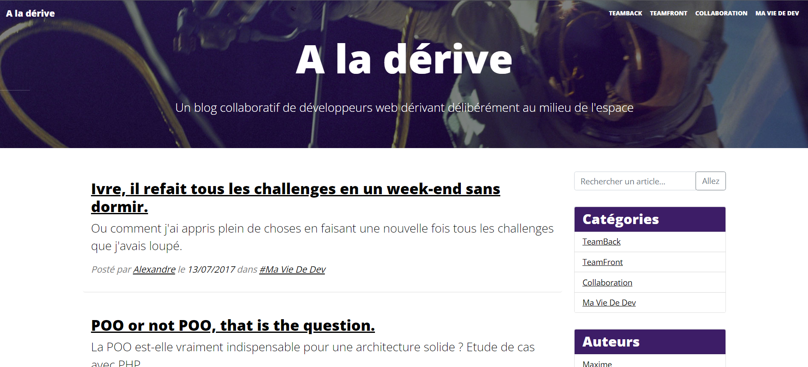

MENARD Stéphanie
Développeuse Web | WordPress
Présentation
Bonjour, je m'appelle Stéphanie, après un an de formation en autodicate sur OpenClassRooms, j'ai suivi une formation de développeur web chez O'Clock.
Le passage du Titre Professionnel DWWM est prévu pour le 2 Février 2022 ainsi que la certification OPQUAST.
Lors de cette formation, j'ai pu approfondir et réunir les connaissances que j'avais en autodidacte.
J'ai pu comprendre les fondamentaux en terme d'architecture (standard PSR, MVC), de méthode de travail (Méthode Agile, SCRUM, travail en Pair programming) ainsi que toutes les bases.
J'ai ensuite suivi une spécialisation WORDPRESS.
A la suite de cette spécialisation, nous avons réalisé un projet commun (groupe de 3 personnes) que vous pourrez découvrir plus bas.
Formations
- Formation développeur web chez O'Clock - 6 mois
- Client : HTML/CSS, RWD, Github, VSC, Terminal
- Serveur : PHP
- Intéractions : Javascript, Bootstrap
- POO & Données : PHP, MySQL, Bootstrap
- Architecture : Méthode agile et SCRUM, PHP, MVC, MySQL
- BackOffice : PHP, PDO,
- API : Javascript, Ajax, PHP, Lumen, Eloquent, Insomnia
- Système et CMS
- Spécialisation Wordpress
- OpenClassRooms - autodidacte
- HTML/CSS
- Bases Javascript
- Bases PHP
- Bases MySQL
- Bootstrap
- Bases Terminal
CV
Mes expériences professionnelles
-
De 2012 à 2013 : Secrétaire médicale : Cabinet médical du Dr DJIAN - 24 Avenue Niel 7017 PARIS :
- Accueil physique et téléphonique des patients
- Ouvertures et gestion des dossiers
- Prise de rendez-vous
- Planification des interventions
- Encaissement des règlements de consultation et d'intervention
- Réservation des centres de rééducation
- Gestion des ordonnances, feuilles de soins
- Frappe de comptes rendus de consultation à l'aide du dictaphone
- Frappe de comptes rendus opératoire à l'aide du dictaphone
-
De 2014 à 2021 : Secrétaire juridique : Etude DUBOIS-FONTAINE Huissiers de justice associés : 23 Avenue Paul Vaillant Couturier 93420 VILLEPINTE :
- Ouvertures des dossiers
- Rédaction d'actes ( commandement de payer, assignation, sommation, citation, saisie attribution, signification de jugement, d'arrêt, d'ordonnance)
- Réception et traitements des actes après signification
- Gestion des archives
- Relance facturation
- Taxation
- Gestion et affranchissement du courrier
- Réception et répartition du courrier
-
De 2021 à aujourd'hui : Formation Développeur web : O'Clock - Formation de 6 mois
Formations et diplômes
-
Formation enseignement U.V :
- Lycée MARIANO FORTUNY 75017 PARIS. Obtenu le 12/04/2010
-
CAP Esthétique – cosmétique – parfumerie :
- Lycée MARIANO FORTUNY 75017 PARIS. Obtenu le 02/07/2010
-
Certificat de secrétariat médico-social :
- CULTURE ET FORMATION. Obtenu le 26/10/2011
-
Formation Développeur web :
- O'Clock - Passage du titre professionnel DWWM le 2 Février 2022
- Certification OPQUAST - 765 / 1000 PTS
Informations complémentaires
-
Langues :
- Anglais, espagnol niveau scolaire
-
Loisirs :
- Programmation, lecture, dessin, course à pied.
Réalisations

Projet réalisé au cours de la formation
Oblog